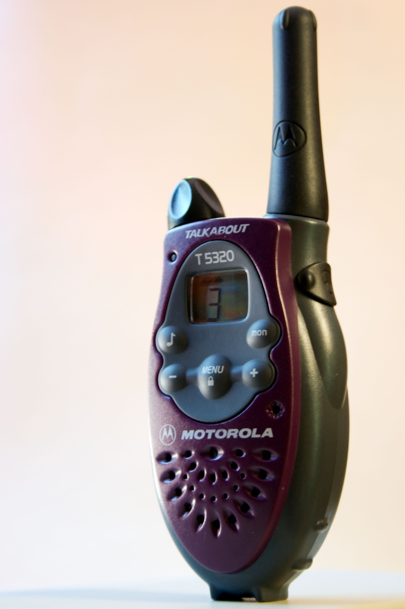
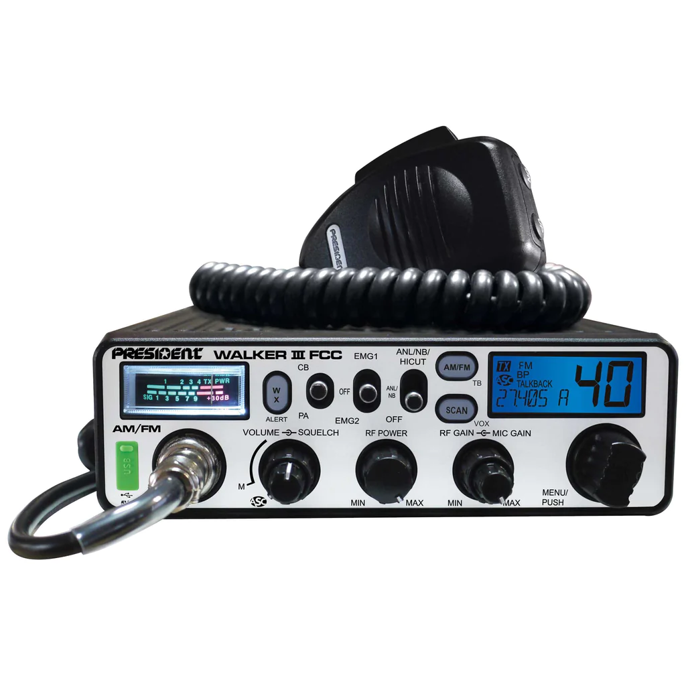

Part 95: GMRS, FRS, and CB radio
GMRS & FRS Radio
GMRS (General Mobile Radio Service) and FRS (Family Radio Service) are pretty much the same.
Except GMRS requires a license that costs $75 and no test. FRS requires no license but your power is very limited...
GMRS You can do at most 50 Watts on CERTAIN frequencies FRS is mostly 2 watts.
GMRS you also permited to use a non-linked repeater that is not linked to the telephone network.

CB Radio
CB radio is most commonly referenced as the Truckers radio service. However these frequencies are open to everyone with no license required.
The frequencies are 26.965 to 27.405 MHz or 40 channels.
Normaly you can only do 4 watts with CB however some radios support SSB (Single Side Band) and you can legally do 12 watts on CB SSB.
